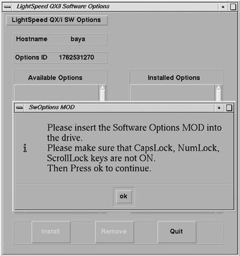
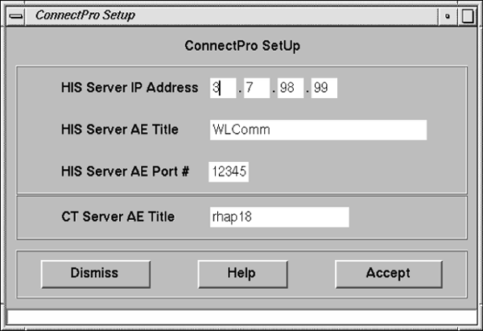
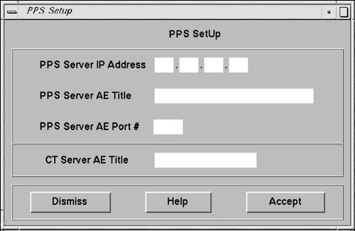
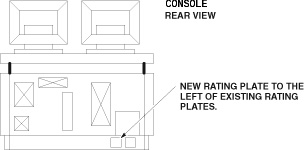

Operating Documentation
Direction 5193574-800, Rev# 22
LightSpeed 7.X Service Methods
Module Version 2.0, Version Date 3/28/07
Operating Documentation |
| Last Revised on: | October 13, 2005 |
| NOTE: | Before you install the ConnectPRO option software, obtain the following information from the hospital’s network administrator: |
HIS Server IP Address: ________________________________
HIS Server AE Title: ___________________________________
HIS Server AE Port# :__________________________________
CT Server AE Title: ___________________________________
Open the Service desktop.
Select the [TOOLBOX/UTILITIES] menu.
Select [INSTALL].
Select [INSTALLOPTIONS] to display the options window shown in Illustration 1.
| NOTE: | This program is run for each software option you plan to load from the MOD or DVD (as applicable for your system). For example, if you have to load two option MODs or DVDs, run this program twice. |
Insert the ConnectPRO option MOD or DVD (as applicable for your system) into the drive.
Select [OK] to display a software options screen similar to the one shown in Illustration 2.
Select [CONNECTPRO] from the Available Options list box.
Select [INSTALL]. A message box may appear while the option loads. The option label appears in the Installed Options list, when installation completes. Be patient, as some options take a fraction of a second to install. Some may take minutes.
When ConnectPRO appears in the Installed Options list, the ConnectPRO Setup screen appears similar to the one in Illustration 3.
Enter the HIS information you recorded into the corresponding data fields on the ConnectPRO Setup screen.
If you need additional information, select [HELP] to display a Help window explaining each data field.
Select [DISMISS] to exit the ConnectPRO Setup screen without any changes.
Click on [ACCEPT].
If you have PPS information, enter the data you recorded and obtained from the hospital's network administrator (See Note before Section 1) into the PPS Setup screen data fields. Then click [ACCEPT] (See Illustration 4). This returns you to the Software Options screen again.
| NOTE: | PPS Data Optional: If you don't have a PPS network information, leave the data fields blank and press [ACCEPT]. |
Refer to Illustration 2.
Select [QUIT] to exit the installation program.
Select [OK].
(For MOD Media) Remove the MOD and write protect the side containing the ConnectPRO option. The initial install requires a write enabled MOD; the next time you can install the option(s) with a write protected MOD.
(For DVD Media) Remove the DVD from the DVD drive.
If you have another option MOD or DVD to load, go back to step 1.
Go to the SERVICE DESKTOP → UTILITIES → APPLICATIONS SHUTDOWN.
After Applications have shut down, open the console window, or a shell window, type st<ENTER> to start up applications.
When the system applications return, the system is ready to use.
Illustration 1: Options Window (MOD Media Example)

Illustration 2: Sample Software Options Screen

Illustration 3: ConnectPRO Setup Screen

Illustration 4: PPS Setup Screen

Start up the Exam Rx applications.
Query the HIS/RIS system to verify operation. (Refer to the User Manual/CBT for details.)
Due to a problem with LightSpeed systems (Application Software Release 10.5_2.8.2I_H1.3M4), systems using the “Use Study ID” feature of the Connect Pro HIS/RIS option may encounter DICOM image creation problems. To ensure that the system can create images using the Hospital HIS/RIS Study UID format, perform the following functional check prior to customer turnover.
This problem occurs when the Hospital HIS/RIS system sends a Study ID that is longer than 50 characters. The result is that “LandMark UID” ends with a “.” (dot) and this is unacceptable by DICOM standards. This is due to a bug in the host software that truncates the landmark uid and results in a “.” at the end of the string. Landmark UID is created on the system by concatenating “Study Instance UID” and an “internal algorithm”. Investigation showed that this problem occurs when the Preference setup has set the option “Use MWL study instance UID” to “Yes” under Patient schedule. This option helps to put the “Study instance UID” from HIS/RIS system into the DICOM image header.
To simply check whether the Radiology Department may use the “Use Study ID” feature where the system accepts an Study ID from the HIS/RIS System, request a list of Study ID's from the Radiology Department (typical day, typical week, day of option install, etc.). Be sure to review as large a list as possible to avoid any future problems. Review the list of ID's and look for the following:
If any of the Study ID's generated by the HIS/RIS System are greater than 50 characters, the Connect Pro Patient Schedule Preference “Use Study UID?” parameter should be set to “No” to avoid image creation problems.
If none of the Study ID's generated by the HIS/RIS System are greater than 50 characters, the customer may have the Connect Pro Patient Schedule Preference “Use Study UID?” set to “Yes”.
| NOTE: | Because Study UID's from the Radiology Department HIS/RIS System are created dynamically, it may be necessary to repeat this “single patient exam” procedure multiple times to create a Patient Study with an image creation problem on the system. |
If the system demonstrates failures due to performing this procedure, be sure to clean the recon queue of any images that are corrupted due to this error after each failed Patient Study prior to returning the system to the customer.
Prepare the system to perform a HIS/RIS scheduled exam:
Select ExamRx Desktop.
Select [New Patient].
Select [Patient Schedule].
Setup on the Patient Schedule Display:
Select Preferences from the Patient Schedule display.
Select [Yes] for “Use Study UID”.
Select [OK] to close Patient Schedule Preferences display.
Select [Update] from the Patient Schedule display.
Select [All CT Systems] on the Update Parameters display.
Select [Continue Update] on the Update Parameters display.
Click on the first “N” Status Patient display on the patient list from the Patient Schedule display.
Select [Select Patient] on the Patient Schedule Display (system returns to New Patient Display with the selected patient information filled in from the Patient Schedule list).
Setup on the [New Patient] Display:
Under the Anatomical Selector, select [Service].
From the Service List of Anatomical Selections, select [Manufacturing].
Select Protocol # 45.10 (Image Series QA).
Position the QA Phantom for a QA Phantom Image Series:
Mount the Phantom Holder on the head-end of the table.
Mount the 20cm QA Phantom on the Phantom Holder.
Align, level, and center the 20cm QA Phantom:
Align black line on phantom using the internal laser lights.
Level phantom using bubble level and the Z Axis knob on the Phantom Holder.
Center phantom using the Center Phantom procedure in the left head Scanner Utilities selection and the X and Y Axis knobs of the Phantom Holder.
Set internal Landmark.
Acquire the first 20cm QA Phantom Series using the Patient selected from the Patient Schedule Display. Verify that the system completes the 1st series without any image creation problems (bad UID syntax). Look for the following in the GESYslog:
Mon Jun 4 14:44:43 2001 Error: 200002712 Host: hmerct3 Process: imagecreate File: ic_mfm_main.c Line: 425 Image : 6320/1/1 Recon Sequence Id : 1841 MFM error : Format failure Group Number : 20 Element : 52 Error status : -102 Error String : [ bad UID syntax ] Mon Jun 4 14:45:07 2001 Error: 200002714 Host: hmerct3 Process: imagecreate File: ic_imagecreate_req.c Line: 399 Image : 6320/1/1 Recon Sequence Id : 1845 MFM Error : Format failure DICOM image not created
If there are no image create problems using the HIS/RIS System Study UID, the customer can continue to use this setting in the Patient Schedule Preferences setting.
If the image create problem appears (Error Code 200002712 with a “bad UID syntax” as the Error String) in the GESYslog, the customer cannot use the “Use Study UID” feature. Return to the Patient Schedule Preferences display and set this option to “No”.
Use the following procedure to remove corrupted images from the Recon Queue.
CT systems have 6 recon queues on the SBC, (Priority_Job_ 0 through 4 and Prospective queues), one or more of the queues may be corrupt, identify the corrupt queue directory then remove all of it's contents. See example below; all EMPTY Queues have a file size of 9 bytes.
Bring application down via service desktop.
rsh sbc su - root ct01_sbc 3# cd /usr/g/queue ct01_sbc 4# ls -al drwxrwxr-x 9 ctuser ctuser 4096 May 7 1999 . drwxrwxr-x 19 ctuser ctuser 4096 Jan 2 06:18 .. drwxrwxr-x 2 ctuser ctuser 9 Mar 22 16:57 priority0_jobs <-file size 9 = empty drwxrwxr-x 2 ctuser ctuser 9 Mar 22 16:31 priority1_jobs <-file size 9 = empty drwxrwxr-x 2 ctuser ctuser 9 Mar 22 13:41 priority2_jobs drwxrwxr-x 2 ctuser ctuser 61 Mar 22 17:53 priority3_jobs <--Problem Possibly corrupt drwxrwxr-x 2 ctuser ctuser 9 Mar 22 17:02 priority4_jobs drwxrwxr-x 2 ctuser ctuser 9 Mar 22 17:52 prospective drwxrwxr-x 2 ctuser ctuser 9 May 7 1999 recovery ct01_sbc 8# cd priority3_jobs <-- Change Directory to the Directory with the problem. ct01_sbc 9# ls -al drwxrwxr-x 2 ctuser ctuser 61 Mar 22 17:53 . drwxrwxr-x 9 ctuser ctuser 4096 May 7 1999 .. -rw-r--r-- 1 ctuser ctuser 736 Mar 22 18:27 2684.3.21.2684.953733818.518923.pro_helical <--problem ct01_sbc 10# pwd /usr/g/queue/priority3_jobs ct01_sbc 12# rm -i * <---remove all images from the queue
Answer y to remove.
ct01_sbc 14# cd /usr/g/queue ct01_sbc 15# ls -al drwxrwxr-x 9 ctuser ctuser 4096 May 7 1999 . drwxrwxr-x 19 ctuser ctuser 4096 Jan 2 06:18 .. drwxrwxr-x 2 ctuser ctuser 9 Mar 22 16:57 priority0_jobs drwxrwxr-x 2 ctuser ctuser 9 Mar 22 16:31 priority1_jobs drwxrwxr-x 2 ctuser ctuser 9 Mar 22 13:41 priority2_jobs drwxrwxr-x 2 ctuser ctuser 9 Mar 22 18:29 priority3_jobs <-- All removed drwxrwxr-x 2 ctuser ctuser 9 Mar 22 17:02 priority4_jobs drwxrwxr-x 2 ctuser ctuser 9 Mar 22 17:52 prospective drwxrwxr-x 2 ctuser ctuser 9 May 7 1999 recovery
Shutdown and restart applications to flush the queue manager process.
The following procedure saves Characterization Data, Calibration Data, Protocols, and reconfig information including Connect-Pro setup information), to your System State MOD or DVD (as applicable for your system). You must save this information to the site’s System State MOD or DVD in order to prevent having to track down the information and manually enter it every time a Load-From-Cold is performed.
| ||||
| Data Loss: Do Not display any images in Image Works when you save the System State. Exit to the Browser level before you Save System State. | ||||
Depending on your system, insert Save System State MOD into the MOD drive or System State DVD into the DVD drive.
Open the Service desktop.
Select the [PM] option from the list.
Select [SYSTEM STATE].
Select [ALL].
Select [SAVE].
Review the output for errors or missing files. You may use the scroll bar on the right after the tool completes its tasks.
When Save completes, select [DISMISS].
Refer to Illustration 5.
Locate the current Modification Rating plate(s) on the rear of the console.
Fasten the Option Kit rating plate to the left of the existing rating plates.
Illustration 5: Rating Plate Location

Complete and verify the site-specific information on the Red Installation Product Locator Card.
Return the card to the Mailing Address that is printed on the front of the card.